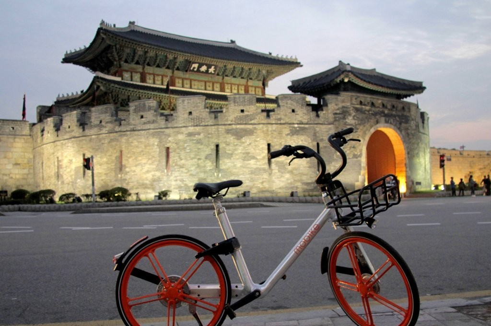
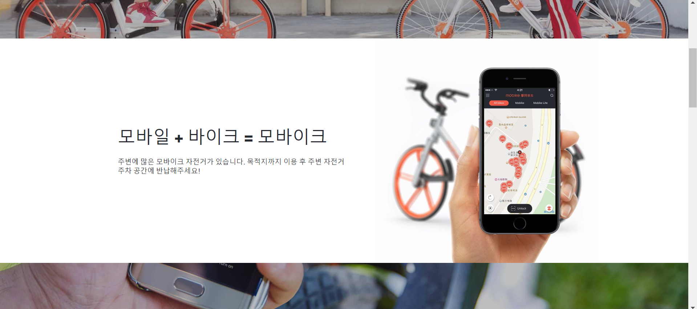
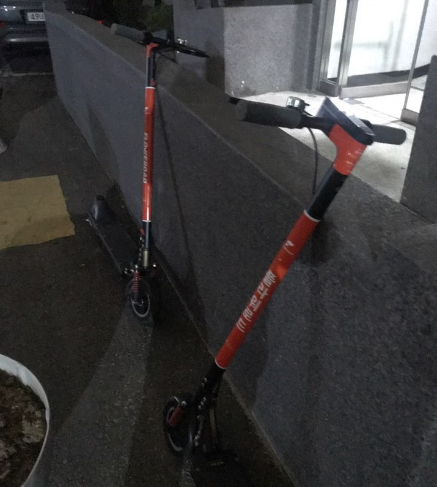
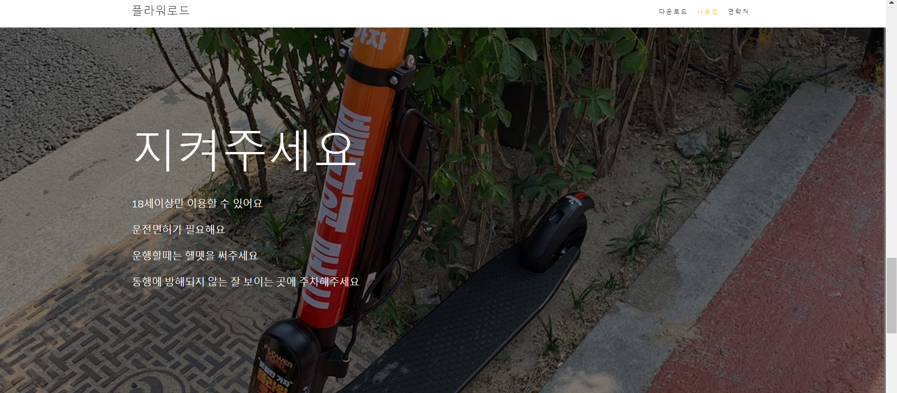
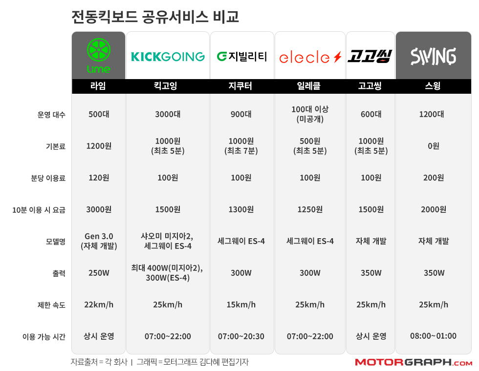

자전거에서 전동 킥보드로
수원의 공용자전거, 모바이크

내가 사는 수원에는 서울의 따릉이, 대전의 타슈 등의 공공자전거와 같은 ‘모바이크’가 있었다.
모바이크는 어플을 다운받아 가입 후 미리 결제만 해놓으면, 그 돈으로 언제 어디서나 자전거를 대여해 탈 수 있는 서비스다. 난 어릴 때 자전거를 즐겨 탔지만 크면서 내 자전거는 버리게 됐다. 그 뒤로 자전거를 탈 일이 거의 없었던 난 반가운 마음에 바로 어플을 다운받고 종종 타고 다니곤 했다.
택시를 자주 타던 나는 주변에 모바이크가 생긴 후 가깝지만 걷기에는 먼 거리는 택시 대신 모바이크를 이용했고, 길거리에서 많은 사람들이 자전거를 대여해 이용하는 모습을 볼 수 있었다.

하지만 그 많은 사람들이 사용했던 모바이크는 제작년 9월 모든 서비스를 중단했다.
중국 업체인 모바이크의 해외 사업장 전면 철수 결정으로, 이젠 모바이크를 수원에서 찾아볼 수 없게 된 것이다.
자전거 없이도 대중교통을 이용할 수 있지만, 가까운 거리를 간편하게 이동하기에 딱이었던 공용자전거가 없어진 것은 생각보다 많은 사람들의 불편함을 초래했다.
모바이크의 재등장?

그렇게 수원에서 공용자전거가 없어진 지 꽤 지난 어느날, 나는 집 앞에서 모바이크와 비슷하게 생긴 무언가를 발견했다.

멀리서 보고 공용자전거인 모바이크가 돌아온 줄 알았지만, 자전거가 아닌 공용 전동킥보드인 ‘플라워로드’였다. 난 전동킥보드도 없고, 면허가 있어야 탈 수 있다는 말을 얼핏 들은 적이 있었기 때문에 관심을 갖고 찾아봤다.
‘공용이면 누구나 탈 수 있는 것 아닐까?’하는 마음에 두근거리며 찾아봤지만, 역시나 면허가 있어야 대여할 수 있었다.
공용자전거 VS 공용전동킥보드
전동킥보드는 자전거에 비해 쉽게 속력을 낼 수 있어 사고가 나기 쉽고, 18세 미만은 사용할 수 없기 때문에 등교, 하교길에 모바이크를 이용하던 학생들은 공용전동킥보드로 공용자전거를 대체할 수 없다.

또한 30분에 300원인 모바이크와 비교하면 10분에 천원이 넘는 전동 킥보드의 요금은 자전거요금의 10배 이상이다.
물론 전동킥보드와 자전거의 가격 차이로 보면 어쩔 수 없지만, 공용자전거를 버스나 택시 대신 싸게 이용하던 사람들이 많기 때문에 과연 택시와 비슷한 요금의 전동킥보드를 자주 이용하게 될 지 의문이다.